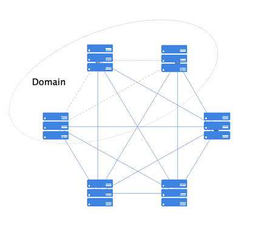
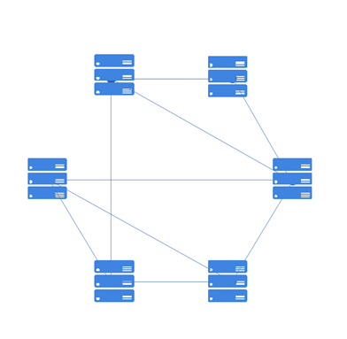

网络协议¶
网络协议作为平台的基础协议，主要负责节点发现、节点安全连接的建立、节点握手协商、消息安全传输等功能，同时需要支持弱网和复杂网络环境下，网络连接的可用性、可恢复性和稳定性。在整体设计上，网络模块仅仅负责管理节点间的连接，专注于网络协议的开发，而不参与区块链协议层的逻辑处理，是一个无状态模块。
区块链网络是由按照区块链协议运行的一系列节点的集合，这些节点共同完成特定的计算任务，并共同维护区块链账本的安全性、一致性和不可篡改性。目前，在平台网络模块支持的三种网络模型。
DIRECT ：全连接网络，节点启动之前需要配置网络里所有节点的信息。
DISCOVER ：自发现全连接网络，节点启动之前配置网络里部分节点的信息，同一个域下的节点可实现自发现全连接。
RELAY ：自发现转发网络，节点启动之前配置网络里部分节点的信息，且两个节点不在同一域下，未建立直接物理连接，那么两个节点想要相互发送消息，只要网络拓扑里有一条可达路径，就可通过中间节点进行消息转发。
全连接网络拓扑¶
所有节点间两两互连，消息的发送不需要经过中间节点传播直接到达对端，因此，具有实现简单、通信高效的优点，但是网络扩展性不高，而且节点在启动之前需要配置网络里所有的节点网络连接相关信息。

自发现全连接¶
自发现全连接网络拓扑图如下所示，无需配置全部节点的连接信息，可依据对端节点的连接信息自动识别同域节点信息并建立物理连接（图中灰色连接线为自发现建立的连接），需要注意的是，这种情况下，只可自动在同域节点间建立连接。

自发现转发网络拓扑¶
自发现转发网络的拓扑如下图所示，不需要所有节点两两互连，无需配置所有节点信息，只要整个网络拓扑形成一个连通图即可，因此理论上，网络可无限扩展，但是实现较为复杂且通信可能有一定的延迟。考虑到拜占庭节点的情况，自发现转发网络模型对网络拓扑图的要求很高，网络拓扑需要支持满足拜占庭容错要求，平台提供相应工具工具，可自动生成支持拜占庭容错的网络拓扑。
